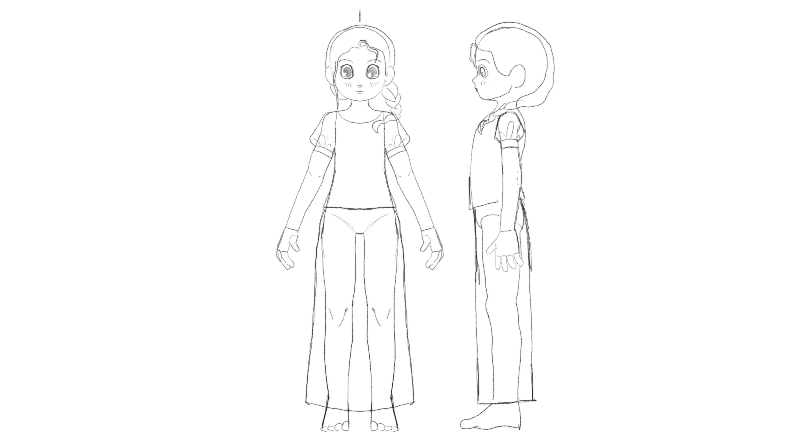
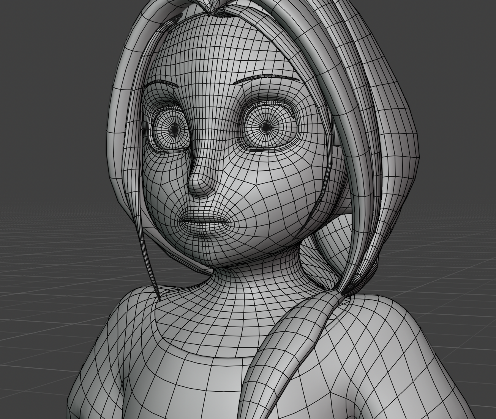
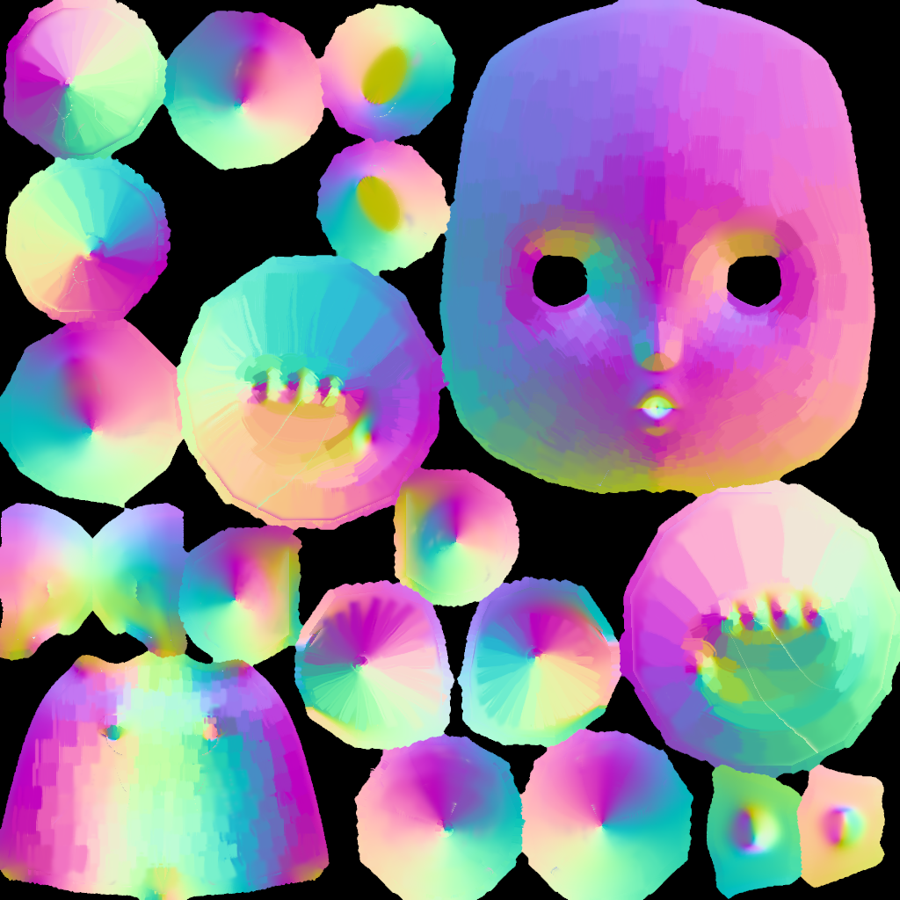
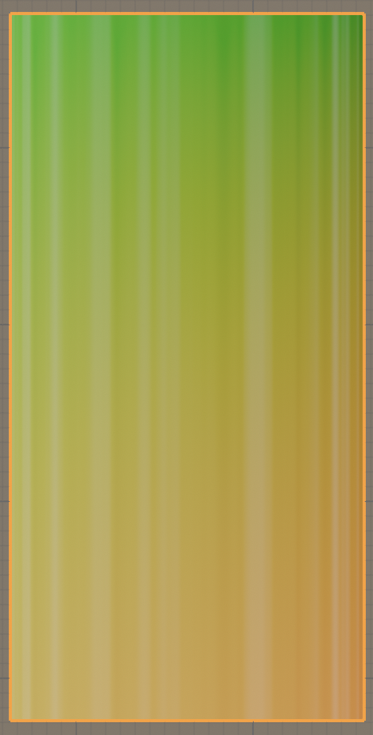
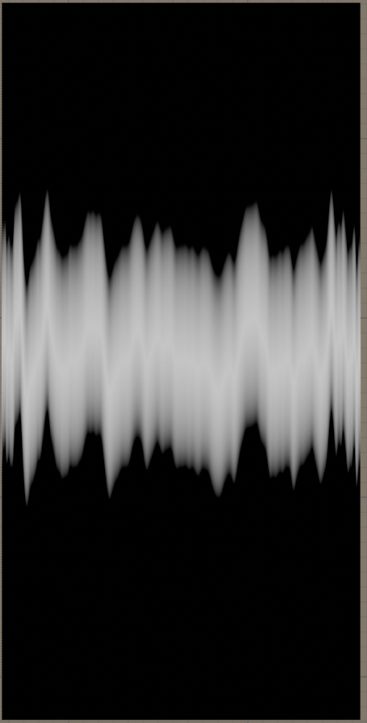
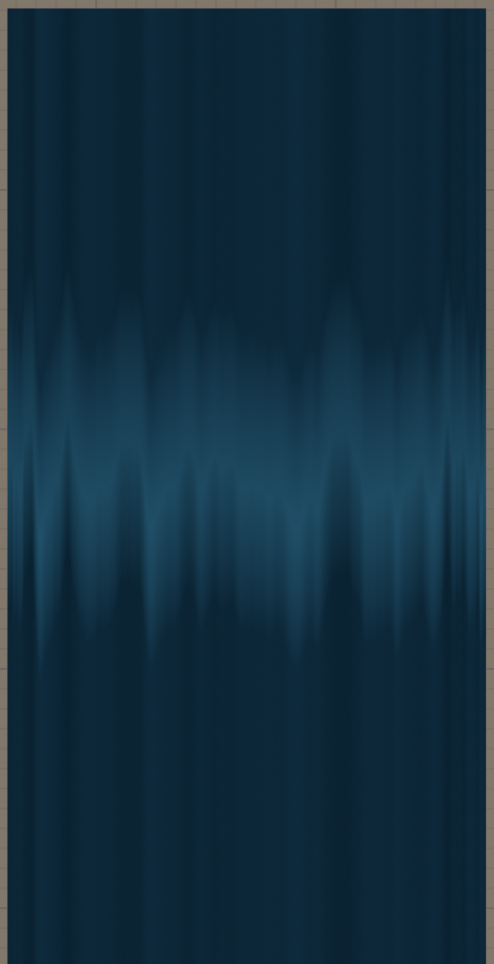
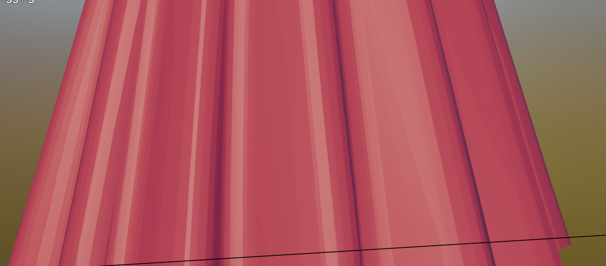
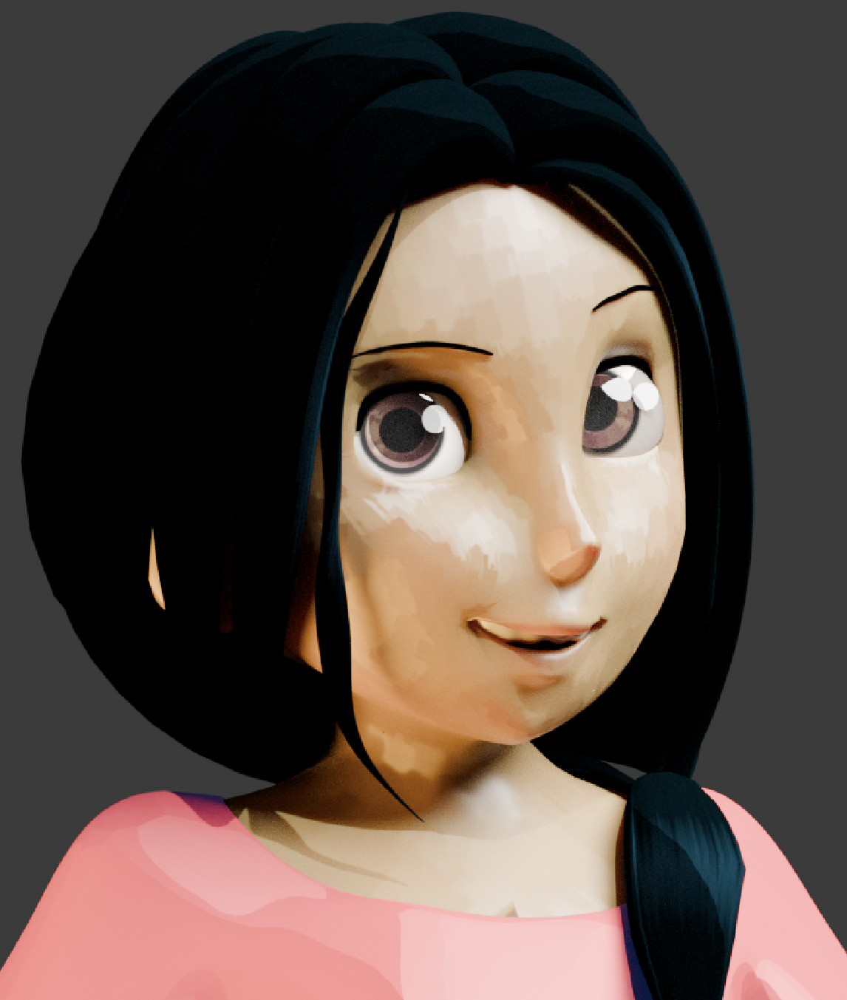

The Anika rig is a free-rig I created to test and build upon the character creation process, including both artistic aspects (design, modelling) as well as more technical parts (rigging, shaders).

I had originally designed for a short film I created, and started with a sketch. After a turnaround sketch, I began poly-modelling the character. Here I made sure to keep in mind edge flow for deformations, and keeping in context the poles and the density of quads.

After that modelling the character, I began texturing. I added seams to the character, and made the UV. Since I wanted to go for a more hand painted look, I started normal-painting. I generated a normal map of the character, and started painting the direction of the normal in Krita. I think hooked up the new normal paint to the BSDF of the character.

I began now to texture the hair. I created a custom shader which used the y-axis of the UV. Using a perline noise node, I could create differentiating lines on the UV. I used a color-ramp to generate a band around the middle of the hair. That band follows the camera direction to have the location shift higher when the camera is higher and lower when the camera is lower. Then I added a color mix, to use the colors of the hair and change the highlighting. I passed this into a BSDF node to then have the highlight be interactive with the lighting, and change hue based off it.



Shader hair progress
After that I wanted to create a fun looking silk texture for Anika dress. I wanted to create a painted looking, so for that I used the meshes normal, and plugged that in as a vector for a Voronoi texture. The texture allows broad bands of color on parts of the mesh that does not change in height much, and more bands of complex places of the mesh. After that, I then used the reflection of the mesh, and applied a color ramp to make the more reflective parts metallic. I thought this through because of the way silk, specificallly retained sericin has a more metallic look. After that, I added a color mix node to make the darker parts of the color to have a blue-ish tint, to make it colorful to look at.

Finally was rigging. I used a rig that included shapekeys, both as corrective, and to make different parts of the facial expressions. This was used for the body and the face. The rig controls were chosen to be intuitive to the animator. Another part was the cutom rig I made for Anika's skirt. I created a pseudo-collision detection with the bones, that would only deform if the bones moved past a certain rotation. This then affected the mesh. I used both detection bones, as well as skirt bones to create a smoother curve when the mesh moved.

And with that Anika model is complete, both a learning expeirence for me, as well as a free rig.
